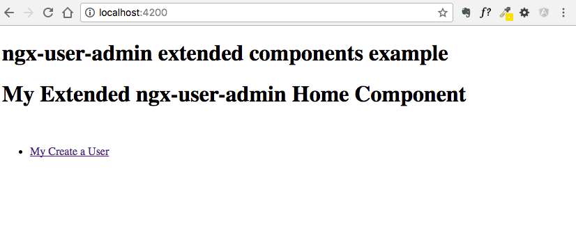
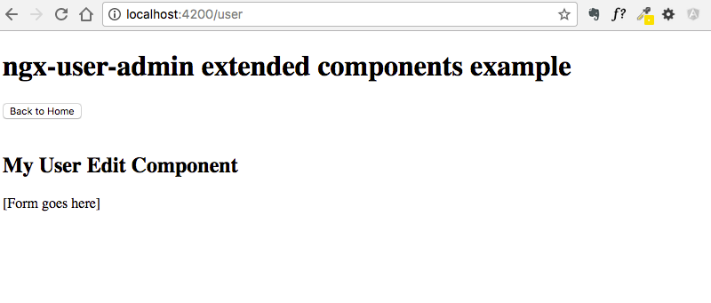

Extending the ngx-user-admin Package¶
Extending the ngx-user-admin package is simple and a safe way to extend the package for usage in your package. While the official Angular Docs have more complete instructions and tips on how to extend elements, I have created an example that we dissect below where we extend two components and we provide custom a custom HTML template: Home Component & User Edit Component.
You can see the full example on my github repo here).
This example is a "fresh" vanilla Angular CLI application I created for this example via the simple command ng new ngx-user-admin-test.
Why do I need to extend the components?¶
Extending components allows you to add or manipulate existing code so you can use it more effectively in your application. The reason we suggest extending this package is for package re-use, the parent class is unaffected no matter what you do in your custom code.
Extending the components also allows the underlying package to be upgraded without need to patch your custom code.
Create your Components & Application Module Set Up¶
I created two components (MyhomeComponent & MyusereditComponent) with the following commands:
ng generate component myhome && ng generate component myuseredit
After importing the @erdiko/ngx-user-admin module, you will need to import these into your new Application module as seen below:
(NOTE - Custom code will be noted by comments prefixed with **UPDATE**)
File: app/app.module.ts
...
// **UPDATE** Import the ngx-user-admin module
import { UserAdminModule } from '@erdiko/ngx-user-admin';
...
// your extended components from ngx-user-admin package added
// automatically by ng-cli
import { MyhomeComponent } from './myhome/myhome.component';
import { MyusereditComponent } from './myuseredit/myuseredit.component';
You will then have to create some custom routing to load your soon to be extended components and import this into your module:
File: app/app.module.ts
...
/**
**UPDATE** Custom routing to make sure we use our extended components
*/
// clang-format off
const routes: Routes = [
{
path: 'user',
component: MyusereditComponent
},
{
path: '',
component: MyhomeComponent
},
{
path: '**',
redirectTo: ''
}
];
// clang-format on
@NgModule({
declarations: [
AppComponent,
// declare our custom components, this is added automatically by ng-cli
MyhomeComponent,
MyusereditComponent
],
imports: [
...
// **UPDATE** Import our custom routes
RouterModule.forRoot(routes),
],
providers: [ ],
bootstrap: [AppComponent]
})
export class AppModule { }
And then you will need to update the Application component HTML template to include the <router-outlet> component so we can see the router output.
File: app/app.component.html
<!-- **UPDATE** add all this HTML below to your template -->
<h1>
{{title}}
</h1>
<div class="page-content">
<router-outlet></router-outlet>
</div>
Extended Component Example: Home Component¶
Below is an example of an extended version of the ngx-user-admin Home Component. This simple example shows how we can provide a custom HTML template to the component so we can provide a different list of links for the user.
A screenshot of this custom component in action:

Here are the two files that make up our custom component:
(NOTE - Custom code will be noted by comments prefixed with **UPDATE**)
File: myhome/myhome.component.ts
...
// **UPDATE** Import the component we will extend
import { HomeComponent } from '@erdiko/ngx-user-admin';
@Component({
selector: 'app-myhome',
templateUrl: './myhome.component.html'
})
export class MyhomeComponent extends HomeComponent {
constructor() {
// **UPDATE** call the parent component's constructor method
super();
}
}
File: myhome/myhome.component.html
<!-- **UPDATE** copy and paste this html into the template -->
<div class="row">
<div class="col-xs-12">
<h1 id="welcome-title">My Extended ngx-user-admin Home Component</h1>
</div>
</div>
<div class="row">
<div class="col-xs-12">
<br />
</div>
</div>
<div class="row">
<div class="col-sm-6 col-xs-12">
<ul class="list-group">
<li class="list-group-item">
<a routerLink="/user/">My Create a User</a>
</li>
</ul>
</div>
</div>
Extended Component Example: User Edit¶
Below is an example of an extended version of the ngx-user-admin Home Component. This simple example shows how we can provide a custom HTML template to the component so we can provide a different list of links for the user.
A screenshot of this custom component in action:

Here are the two files that make up our custom component:
(NOTE - Custom code will be noted by comments prefixed with **UPDATE**)
File: myuseredit/myuseredit.component.ts
...
// **UPDATE** Import the components & service we will extend
import { UserEditComponent } from '@erdiko/ngx-user-admin';
import { AuthService } from '@erdiko/ngx-user-admin';
import { UsersService } from '@erdiko/ngx-user-admin';
import { MessageService } from '@erdiko/ngx-user-admin';
@Component({
selector: 'app-myusereditcomponent',
templateUrl: './myuseredit.component.html',
// **UPDATE** add the following services as providers
providers: [AuthService, UsersService, MessageService]
})
export class MyusereditComponent extends UserEditComponent {
// **UPDATE** the constructor to accept the services as params
constructor(
@Inject(UsersService) usersService: UsersService,
@Inject(ActivatedRoute) route: ActivatedRoute,
@Inject(Router) router: Router,
@Inject(MessageService) messageService: MessageService) {
// **UPDATE** call the parent component's constructor method
super(usersService, route, router, messageService);
}
}
File: myuseredit/myuseredit.component.html
<!-- **UPDATE** copy and paste this html into the template -->
<div class="row">
<div class="col-xs-12">
<button class="btn btn-info btn-sm" routerLink="/">
<i class="fa fa-chevron-left" aria-hidden="true"></i> Back to Home
</button>
</div>
</div>
<div class="row">
<div class="col-xs-12">
<br/>
</div>
</div>
<div class="row">
<div class="col-xs-12">
<div class="panel panel-default" id="edit-update">
<h2>My User Edit Component</h2>
<p>[Form goes here]</p>
</div>
</div>
</div>